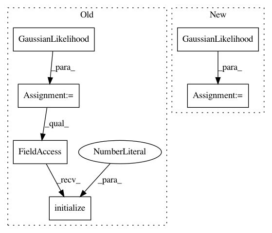

4275d25af066b667a0787f9639b652789f9a0338,test/examples/test_batch_gp_regression.py,TestBatchGPRegression,test_train_on_single_set_test_on_batch,#TestBatchGPRegression#,62
Before Change
def test_train_on_single_set_test_on_batch(self):
// We"re manually going to set the hyperparameters to something they shouldn"t be
likelihood = GaussianLikelihood()
gp_model = ExactGPModel(train_x1, train_y1, likelihood)
mll = gpytorch.ExactMarginalLogLikelihood(likelihood, gp_model)
gp_model.covar_module.base_kernel.initialize(log_lengthscale=-1)
gp_model.mean_module.initialize(constant=0)
likelihood.initialize(log_noise=0)
// Find optimal model hyperparameters
gp_model.train()
After Change
def test_train_on_single_set_test_on_batch(self):
// We"re manually going to set the hyperparameters to something they shouldn"t be
likelihood = GaussianLikelihood(
log_noise_prior=gpytorch.priors.NormalPrior(loc=torch.zeros(1), scale=torch.ones(1), log_transform=True)
)
gp_model = ExactGPModel(train_x1, train_y1, likelihood)
mll = gpytorch.ExactMarginalLogLikelihood(likelihood, gp_model)
// Find optimal model hyperparameters
gp_model.train()
likelihood.train()
optimizer = optim.Adam(list(gp_model.parameters()) + list(likelihood.parameters()), lr=0.1)
optimizer.n_iter = 0
gp_model.train()
likelihood.train()
optimizer = optim.Adam(gp_model.parameters(), lr=0.1)
for _ in range(50):
optimizer.zero_grad()
output = gp_model(train_x1)
loss = -mll(output, train_y1).sum()
In pattern: SUPERPATTERN
Frequency: 3
Non-data size: 6
Instances
Project Name: cornellius-gp/gpytorch
Commit Name: 4275d25af066b667a0787f9639b652789f9a0338
Time: 2018-09-28
Author: gpleiss@gmail.com
File Name: test/examples/test_batch_gp_regression.py
Class Name: TestBatchGPRegression
Method Name: test_train_on_single_set_test_on_batch
Project Name: cornellius-gp/gpytorch
Commit Name: 15b3563c3c7f700ee0bf23b0477527dfa5323cea
Time: 2018-06-07
Author: balandat@fb.com
File Name: test/examples/test_simple_gp_regression.py
Class Name: TestSimpleGPRegression
Method Name: test_posterior_latent_gp_and_likelihood_without_optimization
Project Name: cornellius-gp/gpytorch
Commit Name: 4275d25af066b667a0787f9639b652789f9a0338
Time: 2018-09-28
Author: gpleiss@gmail.com
File Name: test/examples/test_batch_gp_regression.py
Class Name: TestBatchGPRegression
Method Name: test_train_on_batch_test_on_batch